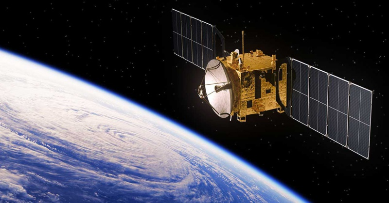

<!DOCTYPE html>
<html lang="en"></html>
<head>
  <meta charset="UTF-8" />
  <meta name="viewport" content="width=device-width, initial-scale=1.0" />
  <title>Exercise 3</title>
  <link rel="stylesheet" href="style.css" />
</head>
<body>
  <header>Satélites</header>
  <div class="new1">
    
  </div>
  <p>
    De ellos, unos 1.900 estaban operativos, mientras que el resto ha cumplido
    con su vida útil y se han convertido en basura espacial. Aproximadamente el
    63% de los satélites operativos están en órbita baja terrestre, el 6% está
    en órbita media terrestre (a 20.000 km), el 29% en órbita geoestacionaria (a
    36.000 km) y el 2% restante se halla en órbita elíptica. Algunas estaciones
    espaciales de gran tamaño han sido lanzadas en partes y ensambladas en
    órbita. Más de una docena de sondas espaciales han sido situadas en órbita
    alrededor de otros cuerpos celestes y han pasado a ser satélites
    artificiales de la Luna, Mercurio, Venus, Marte, Júpiter, Saturno, un
    cometa, el Sol y unos cuantos asteroides.
  </p>
</body>
